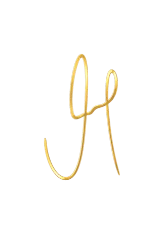

Facelift · Dr. Mário Ferraz
Rejuvenescer, sem deixar de ser você.
Avaliação individual com médico de atuação exclusiva em rinoplastia e cirurgia da face.
CRM-SP 104129 · RQE 45015 · RQE 450151
Savoir-faire
O Facelift como arte anatômica.
I
Rigor
Planejamento cirúrgico a partir do exame detalhado da sua face.
II
Precisão
Incisões posicionadas nos contornos naturais da face.
III
Naturalidade
Uma abordagem que respeita a anatomia e a identidade de cada paciente.
Manifesto
“Cada face é única. Cada cirurgia também deve ser.”
Uma trajetória dedicada à cirurgia da face
O interesse do Dr. Mário Ferraz pela anatomia facial começou ainda na infância, quando dedicava parte do seu tempo ao desenho de rostos e expressões.

Dr. Mário Ferraz
Médico Otorrinolaringologista e Cirurgião Crânio-Maxilo-Facial
- +20
- anos dedicados à face
- Ensino
- formação de médicos
- Face
- atuação exclusiva em rinoplastia e cirurgia da face
Na imprensa

O primeiro passo
Como começa a sua avaliação.
Em poucos minutos, o Dr. Mário explica cada etapa.
Ateliês de atendimento privado
Onde você será recebido.
Campinas
Sede
Av. José Bonifácio, 2890
Jardim das PaineirasSão Paulo
Presencial
Agenda sob consulta
Americana
Presencial
Agenda sob consulta
Consulta digital
Por vídeo
De qualquer cidade ou país
Atendimento individual e reservado em todas as unidades.
Concierge
Solicitação de consulta privada.
Prefere conversar agora? WhatsApp
Depoimento
Ana Julia
Sobre o cuidado, a segurança e a confiança em cada etapa.
Depoimento autorizado. Cada experiência é individual.
Dúvidas